Префектура Нара · Ямадзоэ · рёкан, сауна, кафе
Деревня Ямадзоэ: рёкан с сауной на дровах и кафе в бывшей автомастерской
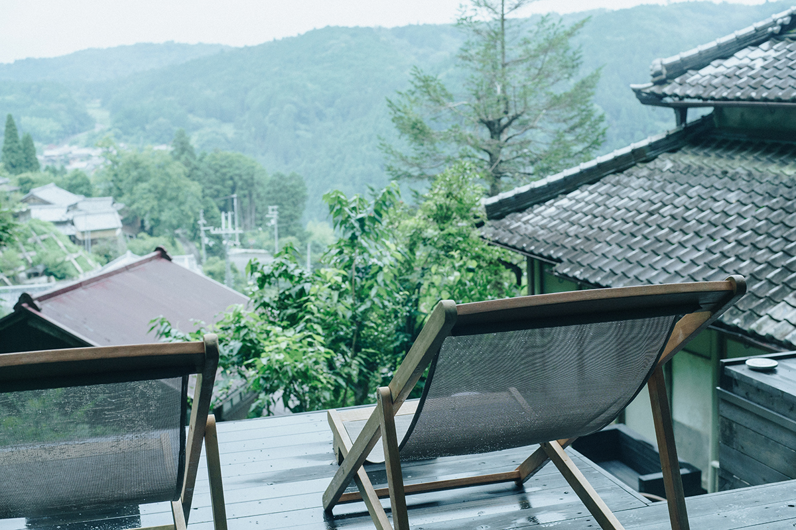
Ямадзоэ лежит на самом краю префектуры Нара, у границы с Миэ, среди чайных полей и лесистых гор. Сюда приезжают жить новые люди: один открыл рёкан с сауной в столетнем доме, другой устроил кафе и галерею в старой автомастерской.
Деревня
Ямадзоэ: чайные поля на стыке трёх земель
Деревня Ямадзоэ стоит на северо-восточном краю префектуры Нара, на плато Ямато, где склоны покрыты чайными кустами. Около 80% её земли занимает лес, а живёт здесь примерно 3500 человек (данные 2021 года). Главное занятие местных жителей по-прежнему сельское и лесное хозяйство.
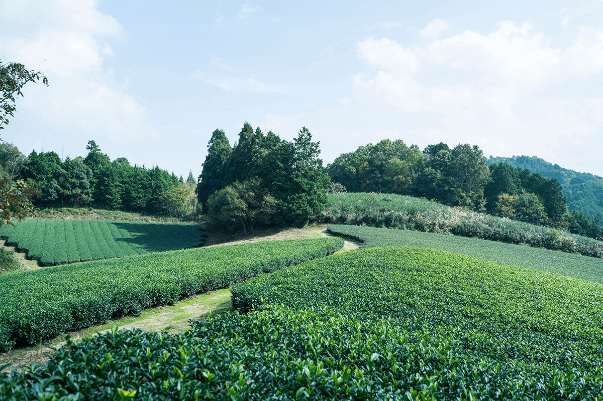
Ямадзоэ сложилась из трёх деревень, и сюда сходились три уклада жизни: нарский, киотский и тот, что принят в соседней префектуре Миэ. Поэтому, как говорят местные, это земля, которая привыкла принимать чужое, смешиваться и меняться. Старые обычаи здесь живут рядом с современной жизнью: до сих пор по деревне ездят лавки на колёсах, которые развозят рыбу и тофу, а вместе с товаром привозят новости, заботу о соседях и маленькие радости.
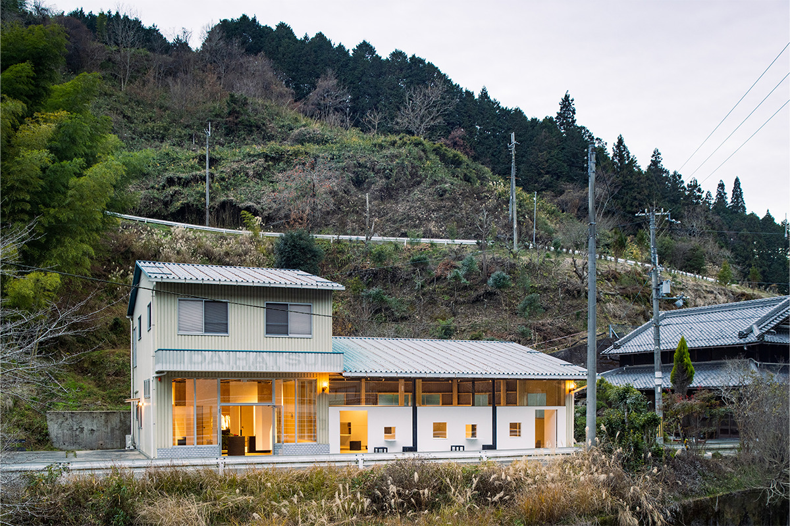
Рёкан
ume,yamazoe: дом деревенского старосты
Владелец рёкана ume,yamazoe родом из префектуры Нара. Однажды он побывал в горных поселках у границы префектуры, где жителей становится всё меньше, влюбился в их пейзажи и уклад и решил переехать. На возвышенности он нашёл японский дом, которому больше ста лет, и превратил его в рёкан на три номера, а в саду построил сауну.
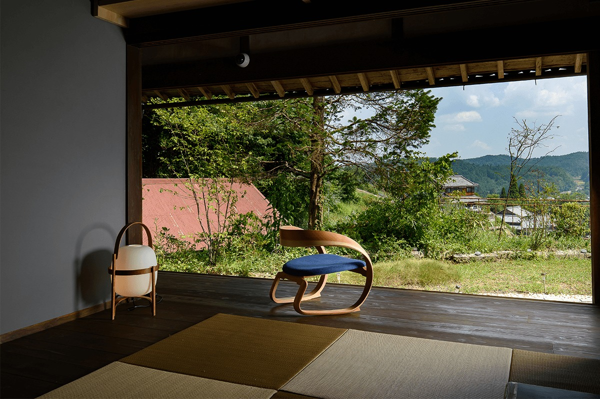
Дом принадлежал старосте одной из деревень, из которых потом сложилась Ямадзоэ. При перестройке в нём оставили всё, чем он был ценен: невиданной толщины главный столб, красивые резные панели над перегородками и сливовое дерево, ставшее символом рёкана. Хозяева предупреждают, что в доме может слегка тянуть сквозняком, а через отверстия под потолком иногда заглядывает какой-нибудь маленький гость из леса. Им хочется, чтобы постояльцы почувствовали, что значил дом для прежних поколений: его строили на заработанные тяжёлым трудом деньги, вкладывая в него годы и надежды.
Название ume, на древнем японском языке ямато-котоба означает «рождаться, пробуждаться». А «умэ» по-японски ещё и слива, та самая, что растёт во дворе.
Стол и люди
В рёкане очень дорожат общим столом: сезонные продукты в один день и в одном месте вместе едят все, кто здесь собрался. Хозяева напоминают, что в слове «васёку», японская кухня, первый знак «ва» объединяет пять смыслов: целое, гармонию, умиротворение, умение соединять продукты и мир. Продукты берут в основном местные. По запросу готовят для гостей с аллергией, для вегетарианцев и по правилам халяль.
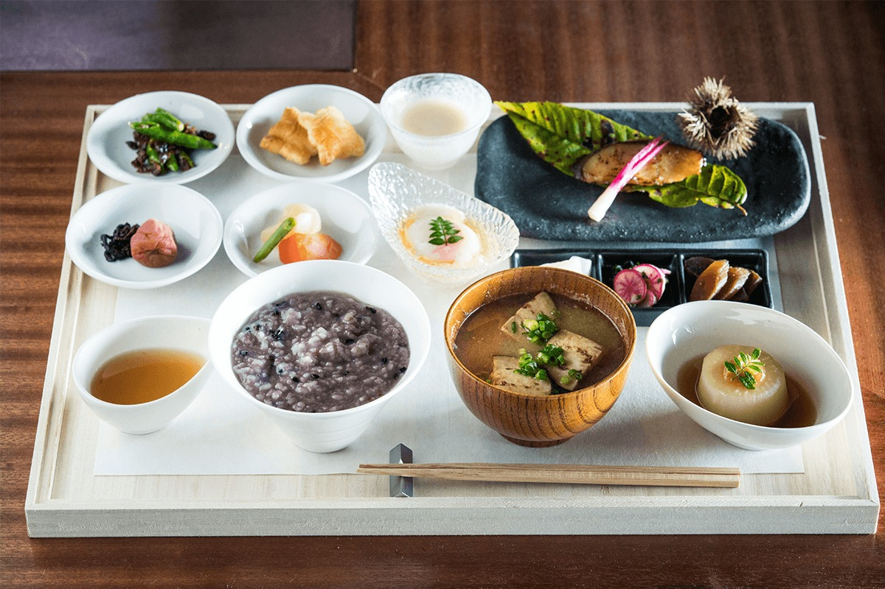
В рёкане работают и люди с инвалидностью или хроническими болезнями, и пожилые соседи. Хозяева объясняют это просто: общество держится на том, что в нём есть самые разные люди. По-настоящему добрым они считают не того, кто всегда готов прийти на помощь, а того, у кого хватает души принять любого человека таким, какой он есть.
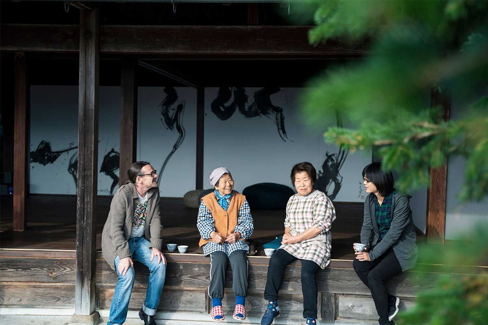
Три номера
В день рёкан принимает только три группы гостей. Номер «Ибуки» («Дыхание») находится за главным домом, его площадь 46,3 квадратного метра, в нём своя ванная и одна большая двуспальная кровать. Из окна виден загадочный пруд: течения в нём не заметно, но вода десятилетиями остаётся прозрачной.
«Мэбуки» («Росток») занимает первый флигель. Его задумали так, чтобы гости просыпались, глядя, как солнце медленно поднимается из-за гор. Площадь 99,8 квадратного метра, есть собственная полуоткрытая купальня, две кровати, а всего здесь могут поселиться до десяти человек. Во втором флигеле расположен «Цумуги» («Пряжа»), белая комната площадью 99,3 квадратного метра, тоже до десяти гостей. Хозяева хотели, чтобы в ней ценили даже мелкие царапины, оставленные прежними жильцами: из таких следов и складывается время.
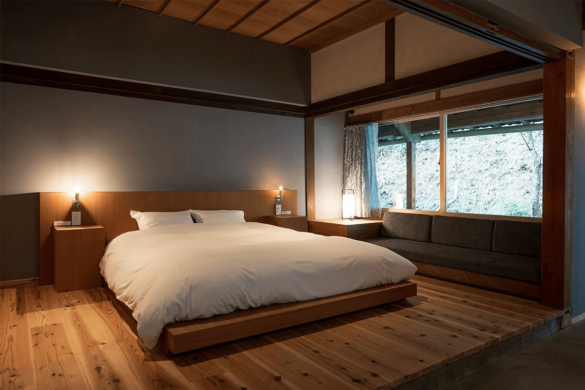
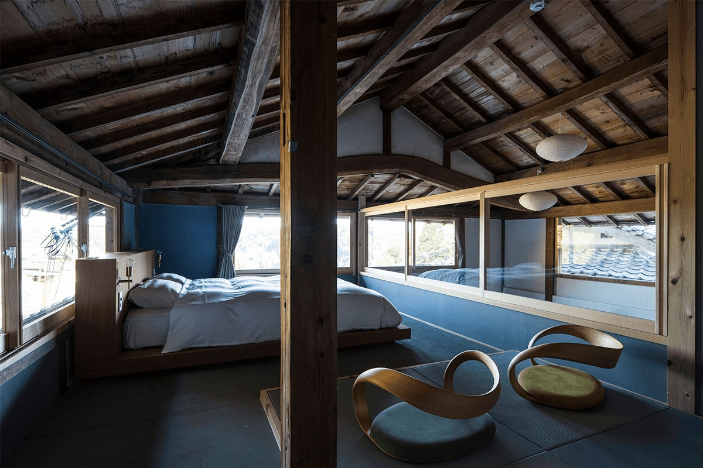
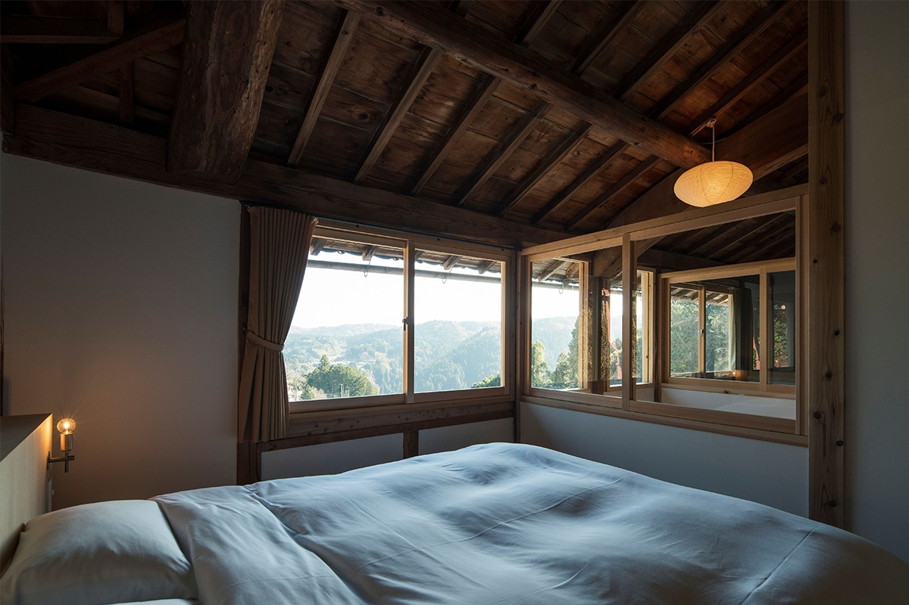
Сауна
ume, sauna: тьма, огонь и чай
В саду рёкана стоит ume, sauna, маленький домик среди бамбуковой рощи и сельских холмов. Её построили своими руками, с помощью и советами местных мастеров. Простой домик с плоской чёрной крышей задуман по той же идее, что и название рёкана: «пробудиться огнём, жизнью, которая жила в дереве».
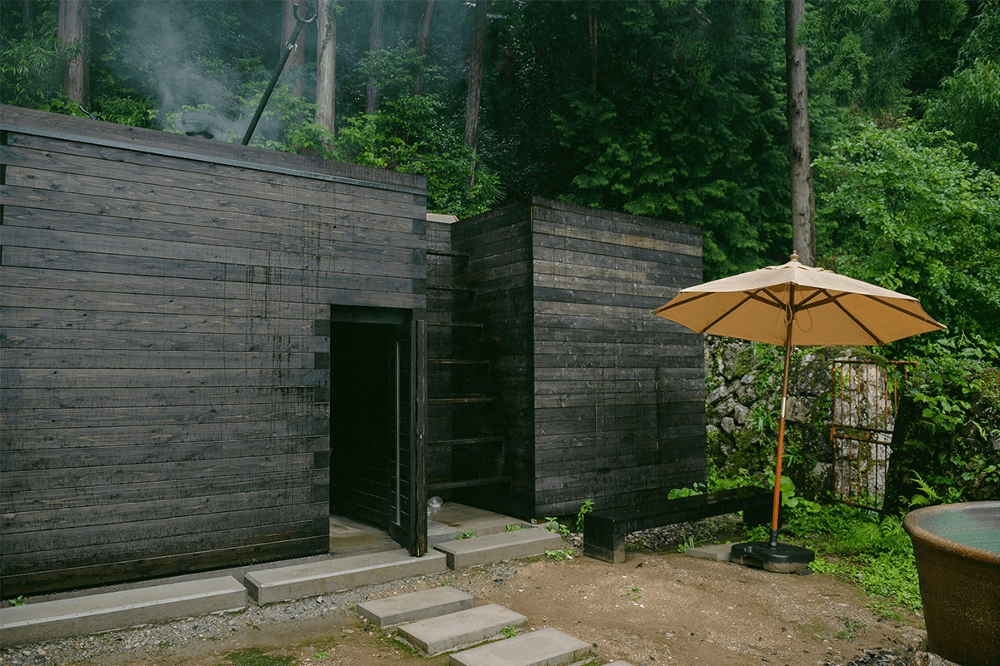
Внутри нет ни больших окон, ни яркого света, только огонь дровяной печи. Окон на уровне глаз нет намеренно: в полутьме человек уходит в себя, и сауна становится похожа на медитацию. Топят её дровами из японского кедра и других деревьев, которые в деревне теперь почти не используют, и в парилке стоит мягкий древесный запах.
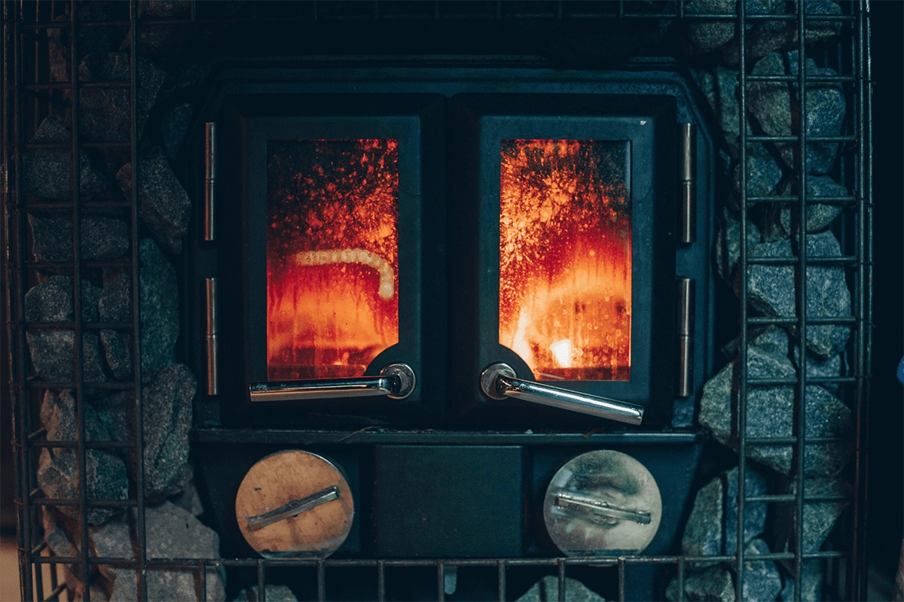
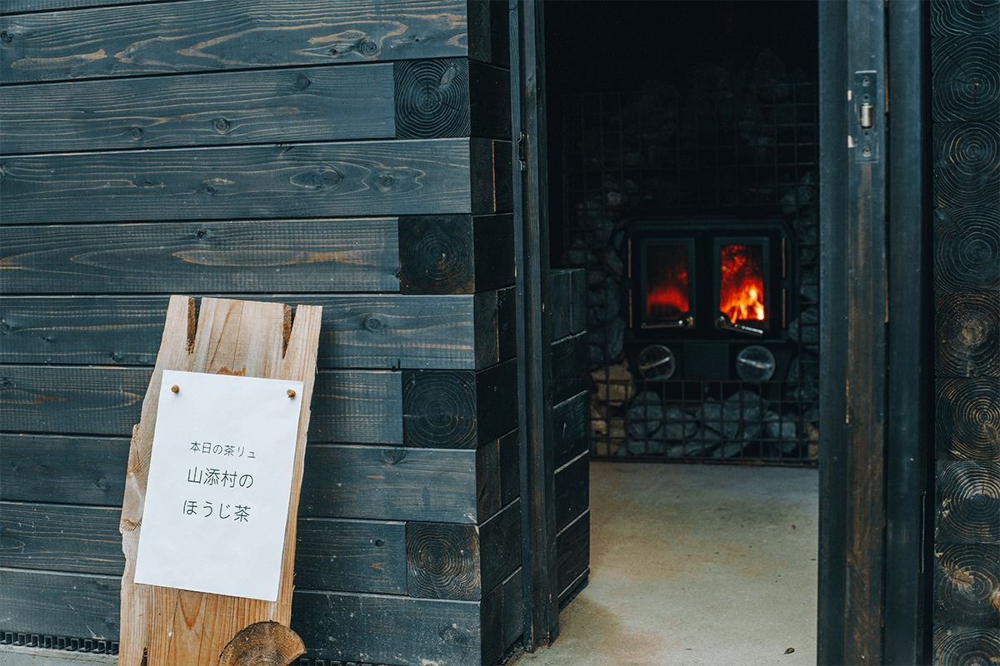
Для поддачи пара используют знаменитый местный чай «ямато-тя». После жаркой парилки окунаются в холодную воду и отдыхают на воздухе, глядя на деревенские пейзажи, а при удачной погоде и на море облаков над долиной. Здесь не слышно ни плеска воды в бассейне, ни хлопающих дверей, ни разговоров. Только ручей неподалёку, шелест листьев на ветру и птицы в горах.
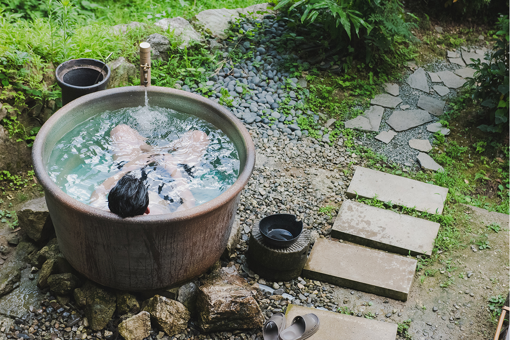
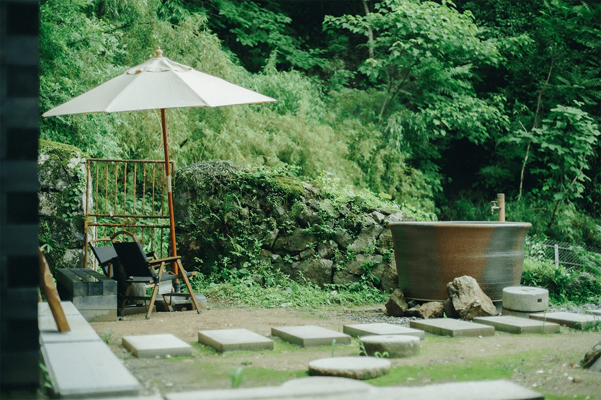
Сауна финская, на 8 человек. Температура в парилке от 60 до 80 °C, вода в купели от 3 до 25 °C, обе зависят от сезона и погоды. Комнаты отдыха в помещении нет, отдыхают на открытом воздухе. Для постояльцев есть отдельная крытая ванна. Сауну можно посетить и без ночёвки: в 2024 году дневной сеанс стоил 9800 иен, а ночь с ужином и завтраком от 34 650 иен на человека с налогом и сервисным сбором.
ume,yamazoe
- Адрес
- префектура Нара, уезд Ямабэ, деревня Ямадзоэ, Катахира, 452
- Телефон
- +81 743-89-1875
- Заезд / выезд
- 15:00 / 11:00
- Часы работы
- сауна 7:00–19:00, по предварительной записи
- Выходные
- нерегулярно
- Цены / Вход
- ночь с ужином и завтраком от 34 650 иен на человека (с налогом и сервисным сбором), дневная сауна 9800 иен
- Номера
- 3
- Сайт
- ume-yamazoe.com
Кафе
doors yamazoe: двери между деревней и дизайном
На окраине деревни, в бывшей автомастерской, работает кафе и галерея doors yamazoe. Её хозяин Косукэ Нагамицу, графический дизайнер родом из префектуры Нара. Десять лет он работал в токийском рекламном агентстве дизайнером и арт-директором, а в 2014 году вернулся в родную префектуру и открыл дизайн-бюро INtoOUT&Co.
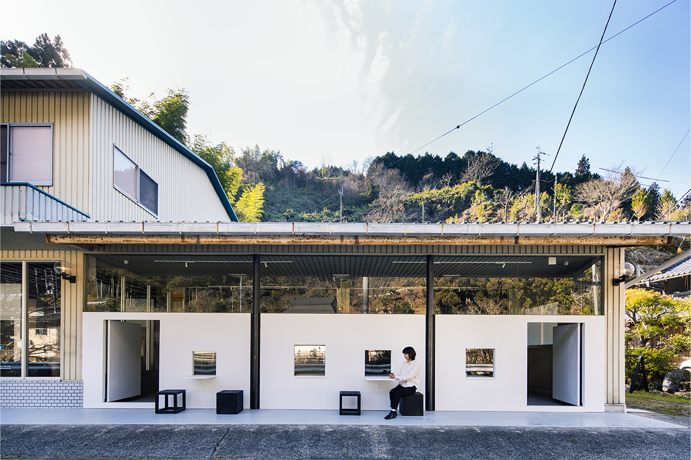
В Ямадзоэ он часто приезжал на мотоцикле. Здесь, вдали от городской суеты и среди неудобств сельской жизни, ему стало ясно, что действительно нужно человеку, а без чего можно обойтись. Он задумался о том, что такое настоящее богатство, и стал искать место, которое будет питать все пять чувств. Однажды он оформлял упаковку лапши мива-сомэн для местной лапшевни, и знакомые по этой работе подсказали ему пустующую автомастерскую.
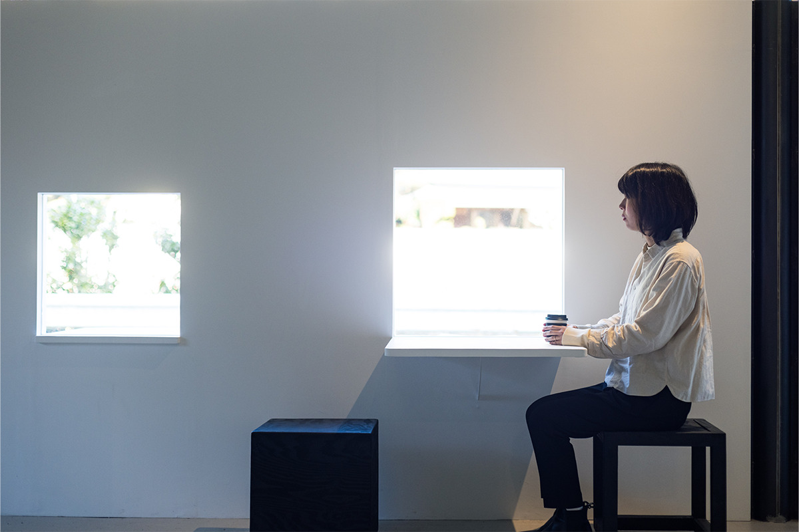
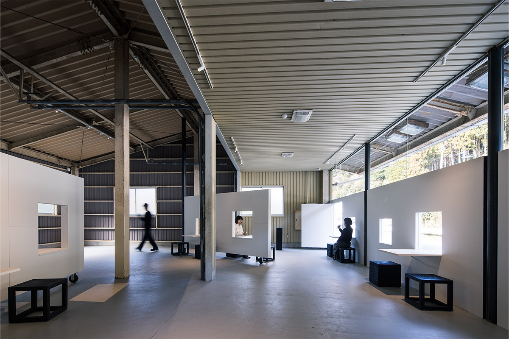
Так появилась идея показать необычное сочетание деревни и дизайна. Нагамицу хотел, чтобы в бывшей мастерской рождались выставки, мастерские и другие формы искусства и культуры, а люди видели, как дизайн может жить рядом с природой.
Вращающиеся двери
Отправной точкой стало название бюро: между «внутри» и «снаружи» стоят двери и окна. Через них ходят воздух и люди, они отделяют одно состояние от другого и связывают человека с пейзажем. Внутреннее и внешнее, вход и выход, человек и вещь, прошлое и будущее, деревня и дизайн: всё это, по замыслу хозяина, должны соединять двери.
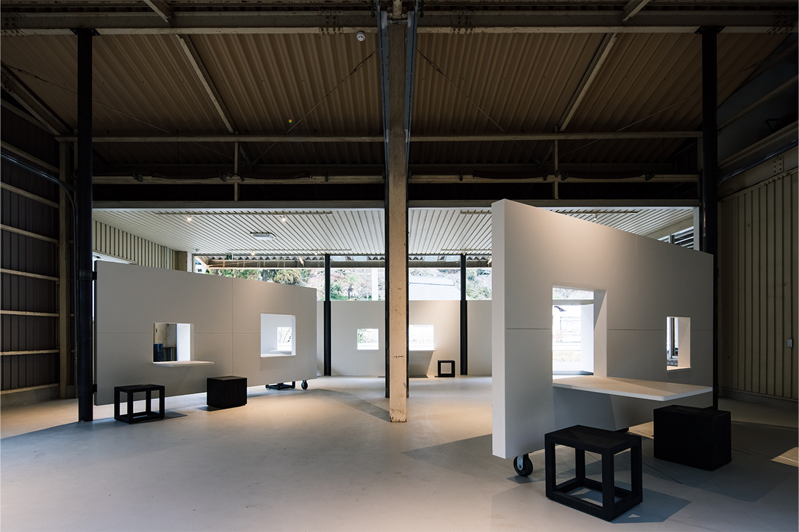
Интерьер спроектировало бюро yagyug douguten, которое тоже работает в горной части префектуры Нара, среди рисовых полей и чайных плантаций. Его руководитель, дизайнер интерьеров, исходит из принципа «вещи и истории»: изучает историю места и людей и вкладывает в пространство свой рассказ. Окна стали рамами для гор и вишнёвой аллеи, а большая дверь в центре кафе поворачивается вокруг стальной трубы и меняет пространство так, что каждый может найти себе место по душе. Новую стену со стороны дороги и вращающуюся дверь сделали мастера, а стойку, стулья, полки магазина и отделку дверей хозяин собрал сам и снимал всю работу как часть замысла. В 2021 году кафе вошло в шорт-лист BEST100 японской премии в области дизайна пространства.
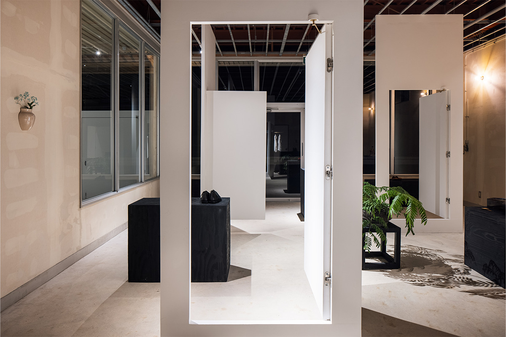
Кофе и вещи
Кофе здесь двух собственных обжарок, светлой и тёмной, к нему подают домашнюю выпечку, которая меняется по сезонам. В магазине продают рабочую одежду и сумки doors yamazoe, которые шьют вручную от выбора ткани до последнего шва, сандалии нарских фабрик (их выпуск одна из местных отраслей) и работы мастеров, отобранные хозяином. Всё кафе служит выставочным залом: здесь проходят выставки и мастер-классы.
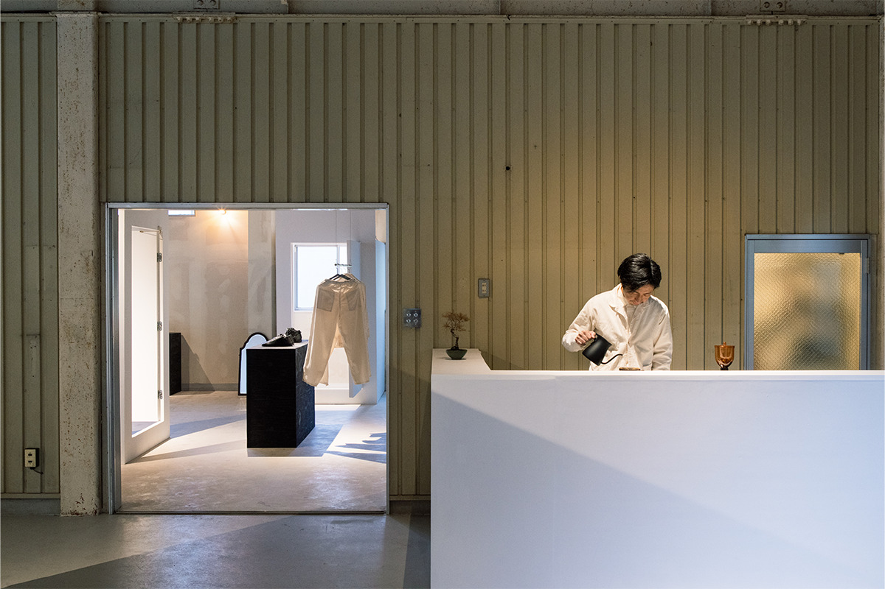
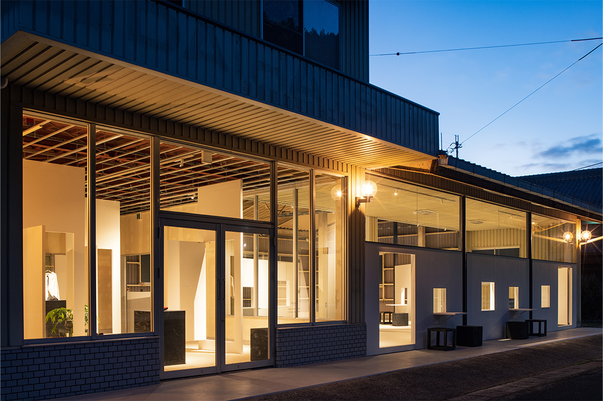
doors yamazoe
- Адрес
- префектура Нара, уезд Ямабэ, деревня Ямадзоэ, Минэдэра, 123
- Часы работы
- пятница, суббота, воскресенье 11:00–17:00
- Выходные
- с понедельника по четверг, бывают дополнительные выходные (см. сайт)
- Как добраться
- около 25 минут на машине от центра Нары; 10 минут от съезда Огура скоростной дороги Мэйхан
Фото: Киёси Нисиока.